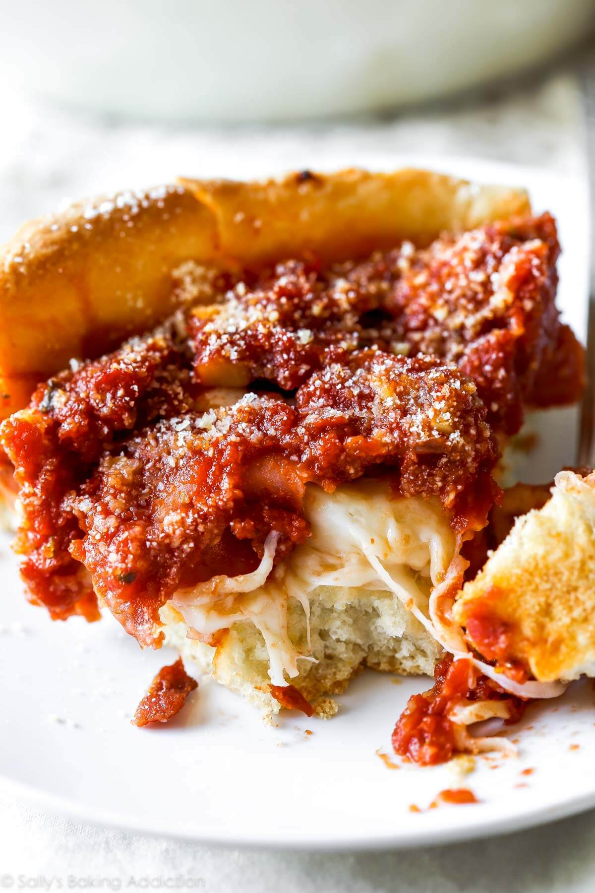

Pizza

Description
A non-traditional pizza boasts a buttery, layered crust that almosts melts in your mouth. It is almost inverted in how they pizza is assembled, and resembling a casserole. It is traditionally eaten with a fork and a knife.
Ingredients
Pizza Crust
- 3-1/4 cups all-purpose flour
- 1/2 cup yellow cornmeal
- 1-1/4 teaspoons salt
- 1 tablespoon sugar
- 2-1/4 teaspoons active dry yeast or instant yeast
- 1-1/4 cups 100°F-120°F water
- 1/2 cup (8 tablespoons) unsalted butter
- About 2 teaspoons olive oil
Tomato Sauce
- 2 tablespoons unsalted butter
- 1 small onion, grated(about 1/3 cup)
- 3/4 teaspoon salt
- 1 teaspoon dried oregano
- 1/2 teaspoon crushed red pepper flakes
- 3 garlic cloves, minced
- one 28-ounce can crushed tomato with basil
- 1/4 teaspoon granulated sugar
Toppings
- 4 cups (about net weight 16 ounces) shredded mozzarella
- 1/2 cup grated parmesan cheese
- 1/2 cup (about net weight 2 ounces or 58 grams) sliced pepperoni
- 4 slices cooked and crumbled bacon
- About net weight 2.5 ounces or 71 grams cooked mild Italian sausage
- About net weight 3.5 ounces or 100 grams sautéed baby bella (cremini) mushrooms
- About net weight 2.5 ounces or 71 grams raw or cooked bell peppers (different colors impart different flavors)
- About net weight 1.5 ounces or 43 grams raw or cooked sliced onions
Steps
1st Dough Phase
- Proof the yeast by combining the water, sugar, and then yeast together in a mixing bowl. After five minutes, the mixture will have a foamy layer on top.
- Add the flour, cornmeal, and sugar to the mixing bowl and mix it a little.
- Add 1/4 cup of melted butter having a temperature no greater than 120°F to avoid killing the yeast. On low speed, mix the ingredients for about 5 minutes.
- Remove dough from bowl and form into ball. Lightly grease a large mixing bowl with the olive oil and place the dough inside, turning it so that all sides.
- Cover the bowl tightly with aluminum foil and allow to rise in a warm environment for 1-2 hours so the dough doubles in size.
Tomato sauce
- While the dough rises, prepare the tomato sauce.
- Place butter in a medium saucepan over medium head and allow it to melt.
- Once melted, add the grated onion, salt, oregano, and red pepper flakes so the onion slightly browns, about 5 minutes.
- Add the garlic, tomatoes, and sugar, and turn the heat down to low-medium heat and allow sauce to simmer for about 30 minutes or until there is under 3 cups of sauce.
- Remove from heat and set aside until ready to be used.
Toppings
- While the dough continues to rise, prepare the toppings.
- In another saucepan, add enough water to just cover the bottom, add sausage, and set over medium heat.
- Turn over sausage until it has evenly browned and transfer to plate.
- In the same saucepan, add enough water to just cover the bottom, add bacon, and set over medium heat.
- Turn over bacon until it is evenly cooked and transfer to same plate.
- Add olive oil in different pan and place over medium heat. Add mushrooms.
- Saute mushrooms for 5 minutes until lightly browned.
- Lower heat to low-medium, simmer for another 5 to 8 minutes until tender.
- Set aside cooked mushrooms along with sausage and bacon.
- Seed the bell pepper and slice it and the onion, removing the skin and ends of the onion.
2nd Dough Phase
- Lightly flour work surface. Remove dough from bowl, saving bowl and aluminum foil for later, and punch down dough to remove air bubbles.
- Roll dough into a large 15-inch by 12-inch rectangle.
- Spread 1/4 cup of softened butter on top of dough.
- Roll it up lengthwise so the dough is still 12 inches in one dimension and cut in half to form 6-inch long logs.
- Form each log into a ball and place back into greased bowl, covering with the saved aluminum foil and allow to rise in refrigerator.
Assembly and Bake
- Preheat oven to 425°F.
- Keep one ball of dough in the refrigerator while working with the other.
- Roll one ball of dough on lightly floured work surface, working it into a 12-inch circle.
- With the rolling pin over the circle, fold over a portion of the dough over it, and guide the dough over the 9-inch by 2-inch deep dish cake pan.
- Press the dough into the cake pan so it is tight fitting inside the cake pan. Trim any excess that hangs off the edges.
- Repeat with the second ball of dough.
- Fill each pizza with 1/2 the mozzarella cheese, then the toppings, followed by half the sauce, and finally sprinkle 1/2 the Parmesan cheese.
- Place both cake pans on a baking sheet and bake for 20-28 minutes or until crust is golden brown.
- Remove from oven and let cool for 10 minutes.